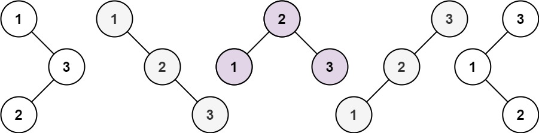

95. 不同的二叉搜索树 II
递归：区间 [start,end] 里每个值轮流当根，左右区间递归出的子树两两组合挂到根上；空区间返回 [null] 占位。
思路
build(start, end)返回用这些值能组成的全部 BST；start > end时返回[null]，让「没有子树」也占一个组合位。- 每个值当根：左区间递归出
lefts、右区间递归出rights，双重循环lefts × rights全部挂到根上。 - BST 性质保证根把值域切开，左右区间互不干扰，组合天然不重不漏；总数就是卡特兰数。
图解
最优解
1import java.util.*;2 3class Solution {4 public List<TreeNode> generateTrees(int n) {5 return build(1, n);6 }7 8 // build(start, end)：用 start..end 这些值能组成的全部 BST9 private List<TreeNode> build(int start, int end) {10 List<TreeNode> all = new ArrayList<>();11 if (start > end) {12 all.add(null); // 空区间也算一种子树，组合时占一个位置13 return all;14 }15 for (int root = start; root <= end; root++) {16 List<TreeNode> lefts = build(start, root - 1);17 List<TreeNode> rights = build(root + 1, end);18 // 左子树 × 右子树 两两组合挂到根上19 for (TreeNode l : lefts) {20 for (TreeNode r : rights) {21 TreeNode node = new TreeNode(root);22 node.left = l;23 node.right = r;24 all.add(node);25 }26 }27 }28 return all;29 }30}题目
给你一个整数 n ，请你生成并返回所有由 n 个节点组成且节点值从 1 到 n 互不相同的不同 二叉搜索树 。可以按 任意顺序 返回答案。
示例 1：

输入：n = 3 输出：[[1,null,2,null,3],[1,null,3,2],[2,1,3],[3,1,null,null,2],[3,2,null,1]]
示例 2：
输入：n = 1 输出：[[1]]
提示：
1 <= n <= 8
题面取自力扣当前版本。
数据快照 2026-11-04。题面版权归力扣所有，本站点仅供本人学习使用，请勿对外发布。